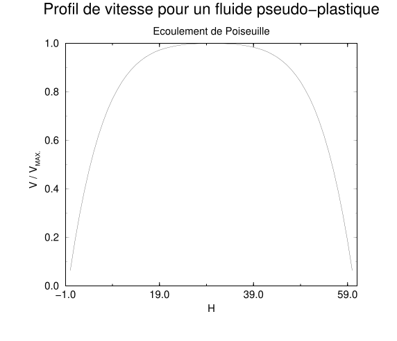

Conclusion
The purpose of this work was the realization of a simple model reproducing a viscoelastic behavior. The addition of quasi-conserved quantities to the existing lattice Boltzmann model has indeed allowed the reproduction at large scale of a behavior very close to that of Jeffreys-type fluids. These quantities allow, indeed, the memorization of the stresses to which the fluid is subjected, and the fact that they are relaxed with a very long time allows this memory to be preserved over a comparable range of time. We have built two models with isotropic characteristics thanks to the study of the macroscopic equations obtained through a Chapman-Enskog expansion in two extreme cases (infinite relaxation time and small relaxation time). The method based on the dispersion equation has guaranteed us, numerically and symbolically, that the extension of these extreme cases to the general cases (very long relaxation time) was carried out without loss of the isotropy character. We thus have an eleven-velocity model and a fifteen-velocity isotropic viscoelastic model. We have given a direction of proof allowing us to recover the constitutive equations. This proof is based on the Chapman-Enskog expansion but takes into account the fact that when a mode is relaxed with a very long time, it is always far from its equilibrium state. We then deduced that our fluid followed a constitutive law close to that of a Jeffreys fluid, thus confirming the results of the numerical simulations performed.
The preceding study nevertheless remains incomplete. Let us mention a few points that would deserve deeper investigation. Our model may, for example, serve as a basis for the construction of more complex models, with nonlinear characteristics different from those presented in appendix B.
We can, in fact, build a model in which the viscosity depends on the elementary invariants of the strain rate tensor. We will then be able to build models in which the fluids can have a shear-thinning (shear thinning) behavior or else a shear-thickening type (shear thickening). Added to the temporal effects, these effects will allow us to build a White-Metzner-type model [2]. It has already been proposed [26] to include an additional non-Newtonian behavior in Boltzmann models by varying the shear viscosity as a function of the local shear of the fluid. It is indeed possible to modify the numerical value of an eigenvalue between two time steps, with the eigenvalues being required to lie between 0 and 2, but with reservations about the stability of the model. One can therefore easily include a power-law-type law or a Carreau-Yasuda law [4] [5] in a lattice Boltzmann model. In the case of the viscoelastic model, the shear viscosity is no longer controlled by a single eigenvalue, but by two eigenvalues. It appears, nevertheless, that the eigenvalue called \(\lambda_\gamma\), when chosen small, will largely dominate the value of the viscosity. This amounts in the fifteen-velocity model to making the following assumption: \[\begin{equation} \nu_0({\dot \gamma})\approx c_{\perp}^2\left({1\over \lambda_\gamma({\dot \gamma})}-{1\over 2} \right)\approx c_{\perp}^2\, {1\over \lambda_\gamma({\dot \gamma})}, \end{equation}\] where \({\dot \gamma}\) is related to the strain rate tensor by: \[\begin{equation} {\dot \gamma}=\sqrt{{1\over 2}\mbox{Tr}\left( {\dot D}^2\right)}. \end{equation}\]
It is then important to note that varying \(\lambda_\gamma\) creates non-negligible temporal effects. If one refers to the constitutive equations with the Jeffreys fluid approximation and with \(\lambda_\gamma\ll 1\), one then finds the following constitutive law: \[\begin{equation} {\mathbf{\sigma}}+\frac{\nu_0({\dot \gamma})}{c_{\perp}^2}\,\frac{\partial\,{\mathbf{\sigma}}}{\partial t}=-\rho\, \nu_0({\dot \gamma})\left({\dot{\mathbf{D}}} +\frac{\nu_\infty}{c_{\perp}^2} \,\frac{\partial\,{\mathbf{\dot D}}}{\partial t} \right). \end{equation}\]
This law is very close to the non-convective White-Metzner law [2], if one neglects the term \(\frac{\nu_\infty}{c_{\perp}^2} \,\frac{\partial\,{\mathbf{\dot D}}} {\partial t}\).
As an example, we have carried out a uniformly accelerated Poiseuille flow. If one waits a sufficiently long time, the time-derivative terms will be negligible, and the fluid will then behave as a viscous fluid, and we will thus have the possibility of checking that the velocity profiles correspond well to those expected. In this example, we have chosen a shear-thinning fluid, whose velocity profile is given in figure 5.3. The viscosity being described in the lattice units by: \[\begin{equation} \nu_0({\dot \gamma})=3 \times 10^{-3}\cdot {\dot \gamma}^{-{3\over 4}}. \end{equation}\]

Other more complex problems can be envisaged, such as the mixing of fluids whose behaviors may or may not be viscoelastic. The addition of an additional fluid can be realized by the method described in [27] for immiscible fluids. Indeed, one doubles the number of populations and adds an interaction between the two fluids allowing the simulation of a surface tension. For miscible fluids, one can simply add a single additional scalar representing the proportion of one of the constituents (appendix C). In the same way, certain simple thermal effects can be added through the introduction of an additional scalar quantity such as energy.
A three-dimensional model is perfectly conceivable and is, moreover, already under development. The problem to be solved for this type of model is to make isotropic the additional “Laplacian”-type term in our constitutive equations. Which is nevertheless paradoxical since this term does not appear in the Jeffreys equation and we are seeking to minimize it, or even neglect it.
Finally, the introduction of non-trace-preserving objective derivatives is possible by adding a coupling between the new viscous modes and an energy-type scalar. The latter will then represent the trace of the viscoelastic stress tensor.
References cited in this chapter
- [2] J.L. White and A.B. Metzner, J. Appl. Polym. Sci., 7, 1963, pp. 1867-1889. ↗
- [4] P.J. Carreau, Ph.D. Thesis, University of Wisconsin, Madison (1968) ↗
- [5] K. Yasuda, Ph.D. Thesis, M.I.T. (1979) ↗
- [26] E. Aharonov and D. Rothman, “Non-Newtonian flow (through porous media): a Lattice Boltzmann method”, Geophys. Res. Lett., Vol. 20, 1993, pp. 679–682 ↗
- [27] A.K. Gunstensen , Ph.D. Thesis, M.I.T. (1992) ↗